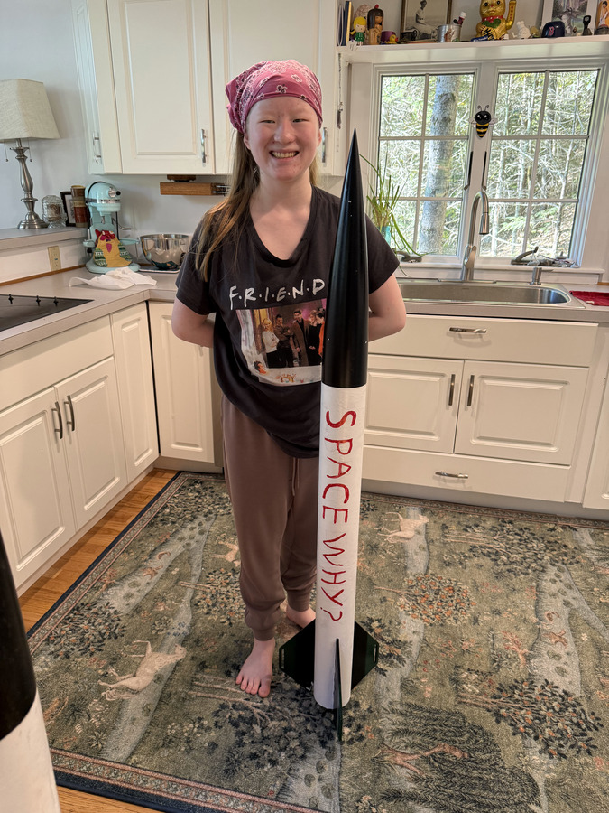
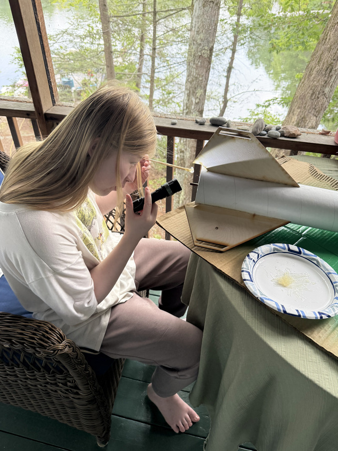

An ongoing aerospace engineering project
Space Why?
I wanted to understand how rockets control their flight. So I started building the systems myself.
From a small payload rocket to custom circuit boards and a two-axis test platform, this project is how I’m learning to design, build, test, and revise.
Explore the project
Flying Blind V1, V2, and V3
Junior HPR Participation Program
Shape and thickness changed after breakage
The work
Three connected engineering stories

Flying Blind
From a solderless breadboard to a custom PCB, a printed avionics sled, and a first flight with a lesson about logging.
Read the case study
Preparing the Zephyr
A larger rocket, epoxy construction, stability and altitude simulations, and two weather-canceled launch attempts.
Read the case study
The TVC test platform
Sketching, printing, assembling, and strengthening a platform after its gimbal mounts broke.
Read the case studyWhere it began
From launches to questions
I enjoyed building and flying rockets at Space Camp and with my family. Following SpaceX launches and watching model-rocketry videos made me curious about how rockets steer and land.
Joe Barnard’s BPS.Space project inspired me to try something similar. Self-landing is my long-term inspiration. My work so far is learning the electronics, software, fabrication, and testing behind those systems.
A related exploration
Making flight data easier to read—and hear
My experience with low vision has prompted me to explore alternative colors, adjustable font and image sizes, and audio feedback for simulations.
We used AI to explore interface options and create a viewer prototype. This is an early design exploration; further development and user evaluation are future goals.
The viewer’s sample flight is synthetic. The available LOG007 recording is a bench/movement test, not a flight log.
Contributions & support
What I did, and how I learned
I assembled the electronics, laid out the schematic and PCB, wrote the flight-computer software, built the rockets, and ran the test flights. I also worked on the TVC test platform, printed and assembled parts, and revised mounts after they broke.
My dad taught me soldering and helped me learn Autodesk Fusion. I learned about coding and component choices through YouTube and internet resources. BPS.Space inspired the project and designed the TVC gimbal. I downloaded its STL files, 3D printed the parts, and assembled the gimbal. My test-platform work and mount revisions are documented separately.
This website was developed with help from AI for drafting and editing text, writing website code, and arranging the layout. The project descriptions are based on my work and our records.
Software revisions are underway. The project repository will continue to develop alongside the hardware.
Next experiments
Record a flight. Continue the TVC build.
The next Green Eggs flight is planned for October 10–11, weather permitting. We’ll include the software reset and verify logging before launch. The Zephyr certification flight is also pending a suitable club launch opportunity.